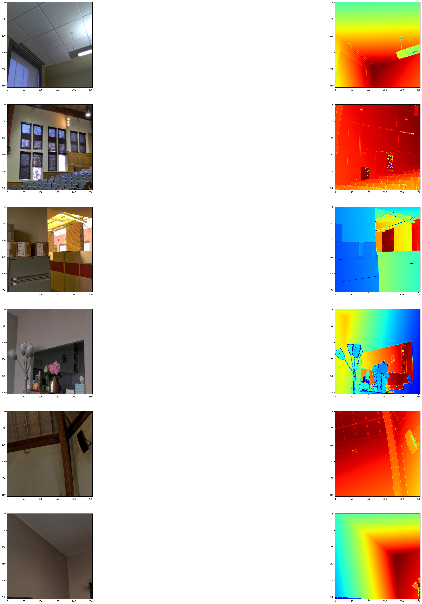
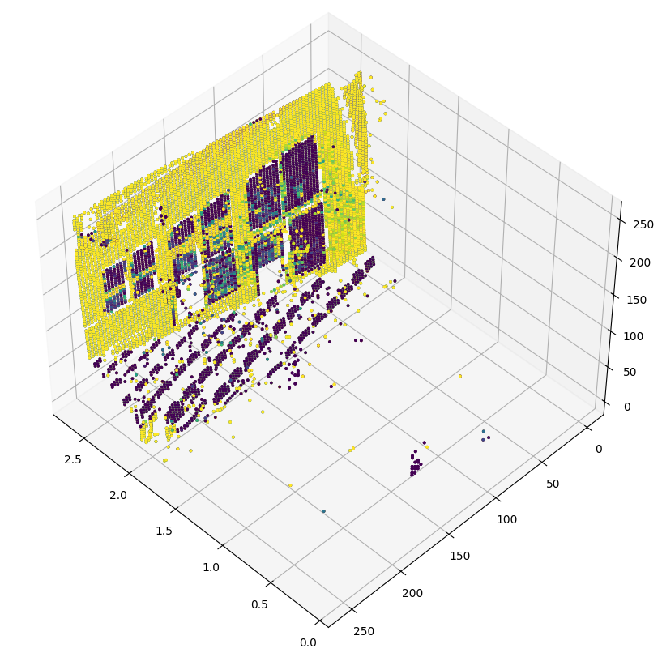

Monocular depth estimation
Author: Victor Basu
Date created: 2021/08/30
Last modified: 2024/08/13
Description: Implement a depth estimation model with a convnet.

Introduction
Depth estimation is a crucial step towards inferring scene geometry from 2D images. The goal in monocular depth estimation is to predict the depth value of each pixel or inferring depth information, given only a single RGB image as input. This example will show an approach to build a depth estimation model with a convnet and simple loss functions.

Setup
import os
os.environ["KERAS_BACKEND"] = "tensorflow"
import sys
import tensorflow as tf
import keras
from keras import layers
from keras import ops
import pandas as pd
import numpy as np
import cv2
import matplotlib.pyplot as plt
keras.utils.set_random_seed(123)
Downloading the dataset
We will be using the dataset DIODE: A Dense Indoor and Outdoor Depth Dataset for this tutorial. However, we use the validation set generating training and evaluation subsets for our model. The reason we use the validation set rather than the training set of the original dataset is because the training set consists of 81GB of data, which is challenging to download compared to the validation set which is only 2.6GB. Other datasets that you could use are NYU-v2 and KITTI.
annotation_folder = "/dataset/"
if not os.path.exists(os.path.abspath(".") + annotation_folder):
annotation_zip = keras.utils.get_file(
"val.tar.gz",
cache_subdir=os.path.abspath("."),
origin="http://diode-dataset.s3.amazonaws.com/val.tar.gz",
extract=True,
)
Downloading data from http://diode-dataset.s3.amazonaws.com/val.tar.gz
2774625282/2774625282 ━━━━━━━━━━━━━━━━━━━━ 205s 0us/step
Preparing the dataset
We only use the indoor images to train our depth estimation model.
path = "val/indoors"
filelist = []
for root, dirs, files in os.walk(path):
for file in files:
filelist.append(os.path.join(root, file))
filelist.sort()
data = {
"image": [x for x in filelist if x.endswith(".png")],
"depth": [x for x in filelist if x.endswith("_depth.npy")],
"mask": [x for x in filelist if x.endswith("_depth_mask.npy")],
}
df = pd.DataFrame(data)
df = df.sample(frac=1, random_state=42)
Preparing hyperparameters
HEIGHT = 256
WIDTH = 256
LR = 0.00001
EPOCHS = 30
BATCH_SIZE = 32
Building a data pipeline
- The pipeline takes a dataframe containing the path for the RGB images, as well as the depth and depth mask files.
- It reads and resize the RGB images.
- It reads the depth and depth mask files, process them to generate the depth map image and resize it.
- It returns the RGB images and the depth map images for a batch.
class DataGenerator(keras.utils.PyDataset):
def __init__(self, data, batch_size=6, dim=(768, 1024), n_channels=3, shuffle=True):
super().__init__()
"""
Initialization
"""
self.data = data
self.indices = self.data.index.tolist()
self.dim = dim
self.n_channels = n_channels
self.batch_size = batch_size
self.shuffle = shuffle
self.min_depth = 0.1
self.on_epoch_end()
def __len__(self):
return int(np.ceil(len(self.data) / self.batch_size))
def __getitem__(self, index):
if (index + 1) * self.batch_size > len(self.indices):
self.batch_size = len(self.indices) - index * self.batch_size
# Generate one batch of data
# Generate indices of the batch
index = self.indices[index * self.batch_size : (index + 1) * self.batch_size]
# Find list of IDs
batch = [self.indices[k] for k in index]
x, y = self.data_generation(batch)
return x, y
def on_epoch_end(self):
"""
Updates indexes after each epoch
"""
self.index = np.arange(len(self.indices))
if self.shuffle == True:
np.random.shuffle(self.index)
def load(self, image_path, depth_map, mask):
"""Load input and target image."""
image_ = cv2.imread(image_path)
image_ = cv2.cvtColor(image_, cv2.COLOR_BGR2RGB)
image_ = cv2.resize(image_, self.dim)
image_ = tf.image.convert_image_dtype(image_, tf.float32)
depth_map = np.load(depth_map).squeeze()
mask = np.load(mask)
mask = mask > 0
max_depth = min(300, np.percentile(depth_map, 99))
depth_map = np.clip(depth_map, self.min_depth, max_depth)
depth_map = np.log(depth_map, where=mask)
depth_map = np.ma.masked_where(~mask, depth_map)
depth_map = np.clip(depth_map, 0.1, np.log(max_depth))
depth_map = cv2.resize(depth_map, self.dim)
depth_map = np.expand_dims(depth_map, axis=2)
depth_map = tf.image.convert_image_dtype(depth_map, tf.float32)
return image_, depth_map
def data_generation(self, batch):
x = np.empty((self.batch_size, *self.dim, self.n_channels))
y = np.empty((self.batch_size, *self.dim, 1))
for i, batch_id in enumerate(batch):
x[i,], y[i,] = self.load(
self.data["image"][batch_id],
self.data["depth"][batch_id],
self.data["mask"][batch_id],
)
x, y = x.astype("float32"), y.astype("float32")
return x, y
Visualizing samples
def visualize_depth_map(samples, test=False, model=None):
input, target = samples
cmap = plt.cm.jet
cmap.set_bad(color="black")
if test:
pred = model.predict(input)
fig, ax = plt.subplots(6, 3, figsize=(50, 50))
for i in range(6):
ax[i, 0].imshow((input[i].squeeze()))
ax[i, 1].imshow((target[i].squeeze()), cmap=cmap)
ax[i, 2].imshow((pred[i].squeeze()), cmap=cmap)
else:
fig, ax = plt.subplots(6, 2, figsize=(50, 50))
for i in range(6):
ax[i, 0].imshow((input[i].squeeze()))
ax[i, 1].imshow((target[i].squeeze()), cmap=cmap)
visualize_samples = next(
iter(DataGenerator(data=df, batch_size=6, dim=(HEIGHT, WIDTH)))
)
visualize_depth_map(visualize_samples)

3D point cloud visualization
depth_vis = np.flipud(visualize_samples[1][1].squeeze()) # target
img_vis = np.flipud(visualize_samples[0][1].squeeze()) # input
fig = plt.figure(figsize=(15, 10))
ax = plt.axes(projection="3d")
STEP = 3
for x in range(0, img_vis.shape[0], STEP):
for y in range(0, img_vis.shape[1], STEP):
ax.scatter(
[depth_vis[x, y]] * 3,
[y] * 3,
[x] * 3,
c=tuple(img_vis[x, y, :3] / 255),
s=3,
)
ax.view_init(45, 135)

Building the model
- The basic model is from U-Net.
- Addditive skip-connections are implemented in the downscaling block.
class DownscaleBlock(layers.Layer):
def __init__(
self, filters, kernel_size=(3, 3), padding="same", strides=1, **kwargs
):
super().__init__(**kwargs)
self.convA = layers.Conv2D(filters, kernel_size, strides, padding)
self.convB = layers.Conv2D(filters, kernel_size, strides, padding)
self.reluA = layers.LeakyReLU(negative_slope=0.2)
self.reluB = layers.LeakyReLU(negative_slope=0.2)
self.bn2a = layers.BatchNormalization()
self.bn2b = layers.BatchNormalization()
self.pool = layers.MaxPool2D((2, 2), (2, 2))
def call(self, input_tensor):
d = self.convA(input_tensor)
x = self.bn2a(d)
x = self.reluA(x)
x = self.convB(x)
x = self.bn2b(x)
x = self.reluB(x)
x += d
p = self.pool(x)
return x, p
class UpscaleBlock(layers.Layer):
def __init__(
self, filters, kernel_size=(3, 3), padding="same", strides=1, **kwargs
):
super().__init__(**kwargs)
self.us = layers.UpSampling2D((2, 2))
self.convA = layers.Conv2D(filters, kernel_size, strides, padding)
self.convB = layers.Conv2D(filters, kernel_size, strides, padding)
self.reluA = layers.LeakyReLU(negative_slope=0.2)
self.reluB = layers.LeakyReLU(negative_slope=0.2)
self.bn2a = layers.BatchNormalization()
self.bn2b = layers.BatchNormalization()
self.conc = layers.Concatenate()
def call(self, x, skip):
x = self.us(x)
concat = self.conc([x, skip])
x = self.convA(concat)
x = self.bn2a(x)
x = self.reluA(x)
x = self.convB(x)
x = self.bn2b(x)
x = self.reluB(x)
return x
class BottleNeckBlock(layers.Layer):
def __init__(
self, filters, kernel_size=(3, 3), padding="same", strides=1, **kwargs
):
super().__init__(**kwargs)
self.convA = layers.Conv2D(filters, kernel_size, strides, padding)
self.convB = layers.Conv2D(filters, kernel_size, strides, padding)
self.reluA = layers.LeakyReLU(negative_slope=0.2)
self.reluB = layers.LeakyReLU(negative_slope=0.2)
def call(self, x):
x = self.convA(x)
x = self.reluA(x)
x = self.convB(x)
x = self.reluB(x)
return x
Defining the loss
We will optimize 3 losses in our mode. 1. Structural similarity index(SSIM). 2. L1-loss, or Point-wise depth in our case. 3. Depth smoothness loss.
Out of the three loss functions, SSIM contributes the most to improving model performance.
def image_gradients(image):
if len(ops.shape(image)) != 4:
raise ValueError(
"image_gradients expects a 4D tensor "
"[batch_size, h, w, d], not {}.".format(ops.shape(image))
)
image_shape = ops.shape(image)
batch_size, height, width, depth = ops.unstack(image_shape)
dy = image[:, 1:, :, :] - image[:, :-1, :, :]
dx = image[:, :, 1:, :] - image[:, :, :-1, :]
# Return tensors with same size as original image by concatenating
# zeros. Place the gradient [I(x+1,y) - I(x,y)] on the base pixel (x, y).
shape = ops.stack([batch_size, 1, width, depth])
dy = ops.concatenate([dy, ops.zeros(shape, dtype=image.dtype)], axis=1)
dy = ops.reshape(dy, image_shape)
shape = ops.stack([batch_size, height, 1, depth])
dx = ops.concatenate([dx, ops.zeros(shape, dtype=image.dtype)], axis=2)
dx = ops.reshape(dx, image_shape)
return dy, dx
class DepthEstimationModel(keras.Model):
def __init__(self):
super().__init__()
self.ssim_loss_weight = 0.85
self.l1_loss_weight = 0.1
self.edge_loss_weight = 0.9
self.loss_metric = keras.metrics.Mean(name="loss")
f = [16, 32, 64, 128, 256]
self.downscale_blocks = [
DownscaleBlock(f[0]),
DownscaleBlock(f[1]),
DownscaleBlock(f[2]),
DownscaleBlock(f[3]),
]
self.bottle_neck_block = BottleNeckBlock(f[4])
self.upscale_blocks = [
UpscaleBlock(f[3]),
UpscaleBlock(f[2]),
UpscaleBlock(f[1]),
UpscaleBlock(f[0]),
]
self.conv_layer = layers.Conv2D(1, (1, 1), padding="same", activation="tanh")
def calculate_loss(self, target, pred):
# Edges
dy_true, dx_true = image_gradients(target)
dy_pred, dx_pred = image_gradients(pred)
weights_x = ops.cast(ops.exp(ops.mean(ops.abs(dx_true))), "float32")
weights_y = ops.cast(ops.exp(ops.mean(ops.abs(dy_true))), "float32")
# Depth smoothness
smoothness_x = dx_pred * weights_x
smoothness_y = dy_pred * weights_y
depth_smoothness_loss = ops.mean(abs(smoothness_x)) + ops.mean(
abs(smoothness_y)
)
# Structural similarity (SSIM) index
ssim_loss = ops.mean(
1
- tf.image.ssim(
target, pred, max_val=WIDTH, filter_size=7, k1=0.01**2, k2=0.03**2
)
)
# Point-wise depth
l1_loss = ops.mean(ops.abs(target - pred))
loss = (
(self.ssim_loss_weight * ssim_loss)
+ (self.l1_loss_weight * l1_loss)
+ (self.edge_loss_weight * depth_smoothness_loss)
)
return loss
@property
def metrics(self):
return [self.loss_metric]
def train_step(self, batch_data):
input, target = batch_data
with tf.GradientTape() as tape:
pred = self(input, training=True)
loss = self.calculate_loss(target, pred)
gradients = tape.gradient(loss, self.trainable_variables)
self.optimizer.apply_gradients(zip(gradients, self.trainable_variables))
self.loss_metric.update_state(loss)
return {
"loss": self.loss_metric.result(),
}
def test_step(self, batch_data):
input, target = batch_data
pred = self(input, training=False)
loss = self.calculate_loss(target, pred)
self.loss_metric.update_state(loss)
return {
"loss": self.loss_metric.result(),
}
def call(self, x):
c1, p1 = self.downscale_blocks[0](x)
c2, p2 = self.downscale_blocks[1](p1)
c3, p3 = self.downscale_blocks[2](p2)
c4, p4 = self.downscale_blocks[3](p3)
bn = self.bottle_neck_block(p4)
u1 = self.upscale_blocks[0](bn, c4)
u2 = self.upscale_blocks[1](u1, c3)
u3 = self.upscale_blocks[2](u2, c2)
u4 = self.upscale_blocks[3](u3, c1)
return self.conv_layer(u4)
Model training
optimizer = keras.optimizers.SGD(
learning_rate=LR,
nesterov=False,
)
model = DepthEstimationModel()
# Compile the model
model.compile(optimizer)
train_loader = DataGenerator(
data=df[:260].reset_index(drop="true"), batch_size=BATCH_SIZE, dim=(HEIGHT, WIDTH)
)
validation_loader = DataGenerator(
data=df[260:].reset_index(drop="true"), batch_size=BATCH_SIZE, dim=(HEIGHT, WIDTH)
)
model.fit(
train_loader,
epochs=EPOCHS,
validation_data=validation_loader,
)
Epoch 1/30
9/9 ━━━━━━━━━━━━━━━━━━━━ 64s 5s/step - loss: 0.7656 - val_loss: 0.7738
Epoch 10/30
9/9 ━━━━━━━━━━━━━━━━━━━━ 7s 602ms/step - loss: 0.7005 - val_loss: 0.6696
Epoch 20/30
9/9 ━━━━━━━━━━━━━━━━━━━━ 7s 632ms/step - loss: 0.5827 - val_loss: 0.5821
Epoch 30/30
9/9 ━━━━━━━━━━━━━━━━━━━━ 7s 593ms/step - loss: 0.6218 - val_loss: 0.5132
<keras.src.callbacks.history.History at 0x7f5a2886d210>
Visualizing model output
We visualize the model output over the validation set. The first image is the RGB image, the second image is the ground truth depth map image and the third one is the predicted depth map image.
test_loader = next(
iter(
DataGenerator(
data=df[265:].reset_index(drop="true"), batch_size=6, dim=(HEIGHT, WIDTH)
)
)
)
visualize_depth_map(test_loader, test=True, model=model)
test_loader = next(
iter(
DataGenerator(
data=df[300:].reset_index(drop="true"), batch_size=6, dim=(HEIGHT, WIDTH)
)
)
)
visualize_depth_map(test_loader, test=True, model=model)
1/1 ━━━━━━━━━━━━━━━━━━━━ 0s 781ms/step
1/1 ━━━━━━━━━━━━━━━━━━━━ 1s 782ms/step
1/1 ━━━━━━━━━━━━━━━━━━━━ 0s 171ms/step
1/1 ━━━━━━━━━━━━━━━━━━━━ 0s 172ms/step


Possible improvements
- You can improve this model by replacing the encoding part of the U-Net with a pretrained DenseNet or ResNet.
- Loss functions play an important role in solving this problem. Tuning the loss functions may yield significant improvement.
References
The following papers go deeper into possible approaches for depth estimation. 1. Depth Prediction Without the Sensors: Leveraging Structure for Unsupervised Learning from Monocular Videos 2. Digging Into Self-Supervised Monocular Depth Estimation 3. Deeper Depth Prediction with Fully Convolutional Residual Networks
You can also find helpful implementations in the papers with code depth estimation task.
You can use the trained model hosted on Hugging Face Hub and try the demo on Hugging Face Spaces.